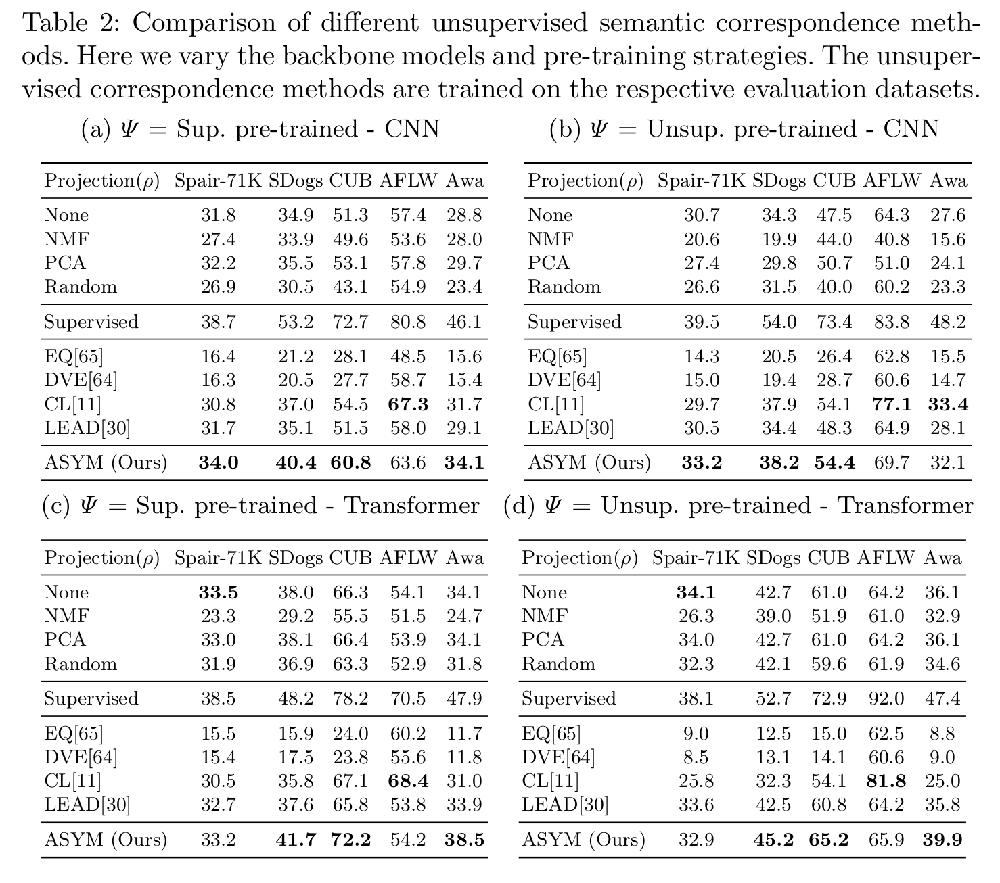

Overall, our proposed ASYM approach obtains better scores than other un-supervised methods on all datasets, independent of the choice of backbone or
pre-training method, with the exception of the AFLW face dataset. Compared
to LEAD, our proposed adaptation improves performance on datasets where the
visual diversity is high (i.e. non-face datasets). EQ and DVE perform poorly
on the datasets where the visual appearance is high across instances, but it
is worth noting that these method were originally designed for the end-to-end
trained setting.

Detailed error analysis: For the unsupervised methods, we see that the most common error type is miss across all methods.
While ASYM reduces misses compared to other unsupervised methods, it is not as good as the supervised approaches.
Compared to the more sophisticated supervised approaches it generates more swaps.
We argue that while more supervision might help to reduce misses, in order to reduce swaps, better matching mechanisms are needed.
Finally, we can see that our new PCK metric is reduced by 20\% compared to the original PCK metric in all cases.
For some applications these errors might not affect the end performance drastically, while for others, this disparity could be significant.
{kind=link}
{kind=link}
{kind=link}
{kind=link}
{kind=link}